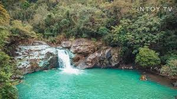
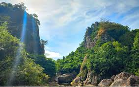
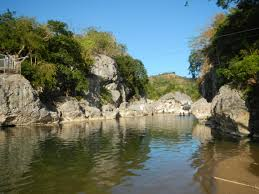
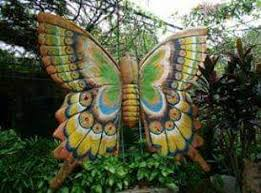
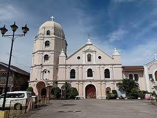
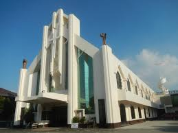
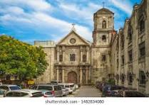
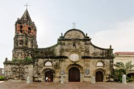

Bulacan is home to stunning historical landmarks, breathtaking natural wonders, and vibrant festivals. Discover the best places to visit and experience the beauty and culture of the province.
(Dona Remedios Trinidad) – A serene waterfall perfect for nature lovers.
(San Miguel) – A hiking spot with caves and river crossings.
A perfect place for nature lovers and adventurers, offering caves, trails, and a glimpse into history.
(Pulilan) – A beautiful garden sanctuary for butterflies.
(Obando) – Famous for its Fertility Dance Festival.
(Barasoain Complex) – A well-known pilgrimage site.
(Baliuag) – A historical church with remarkable architecture.
Known as the "Cradle of Democracy in the East," this historic church played a vital role in the country's independence.
